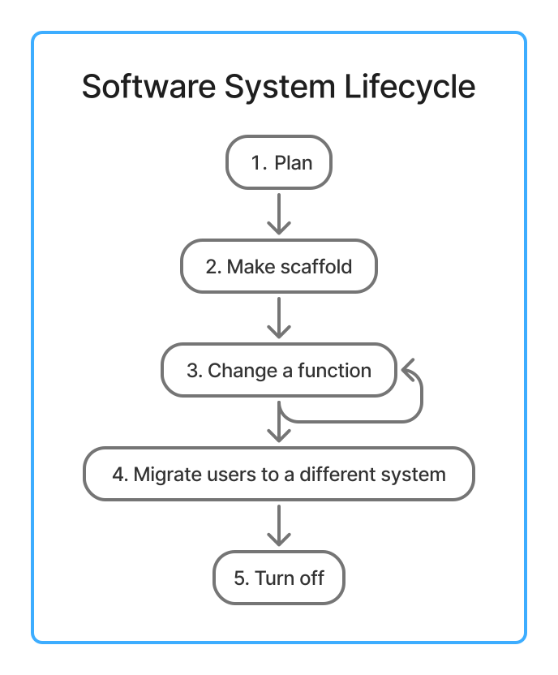
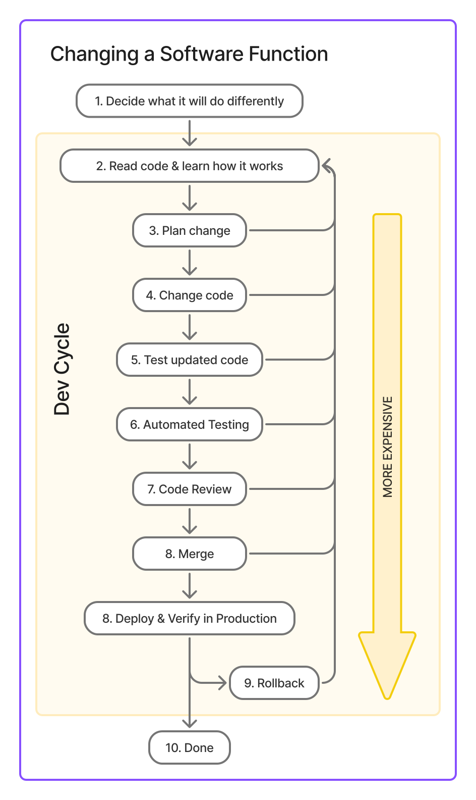

Remote1 to Local1: Boosting Dev Productivity
2025-03-21
Summary
- The pace of software development is limited by two things: 1) figuring out how the thing works and 2)
testing code changes.
- We can classify code testing by where the tests run: locally, in the cloud, in production, etc.
- There are lots of ways to improve tests. The highest-ROI is in moving the tests closer to the engineer.
Detail
- When people develop a software system, they usually use this process:

- Step "3. Change a function" includes adding, changing, fixing, and removing system functions.
- Nearly all the effort spent on the system over its lifetime is spent in "3. Change a function".
- Multiple developers perform this step concurrently.
- When developers can do step 3 faster, the organization's engineering work gets done
faster.
- Faster engineering means new products and features become available quicker. For a
business, speeding up step 3 brings faster time-to-market, increased revenue, and better
cost-efficiency.
- Faster engineering also reduces the time to repair the system when it has problems.
- Let's look more closely at this step:

- Ways to speed it up:
- Make each step faster
- Reduce the number of iterations
- Discover problems earlier
- Make each step faster:
- Decide what it will do differently
- Have a single person who decides this, a Directly Responsible Individual (DRI)
- Get stakeholders to review designs before changing code
- Read code & learn how it works
- Make code clarity the top priority
- A good ordered set of priorities: clarity, resilience, performance
- Use languages and libraries with good documentation
- Organize code into modules, grouped by business function, not type
- Use example tests. These are tests that use literals to specify input and expected output
data. Literals are more clear than data made with helper functions.
- Ban code inheritance. Interface inheritance is fine.
- Ban runtime dependency injection frameworks (Guice, Fx) and instead have
main()
construct all the
things.
- Use linter rules to restrict depth of indentation, number of function parameters, lines per
function, lines per file, complexity of types, etc. To disable a rule, require the
code author to add their name and an explanation of why breaking the rule is the best
choice.
- Use a type-checked language
- Ban type-checking escape hatches (TypeScript's
any, Rust's unsafe,
etc.)
- Ban reflection
- Designate a Documentation Manager to make teams maintain minimal documentation.
- Invest in reducing technical debt
- Keep developer turnover low
- Quickly migrate off legacy systems and turn them off.
- Keep systems simple
- Use a monolith, not microservices.
- Plan change
- Foster a culture of writing clear and complete PR descriptions and titles.
- Link related PRs together so one can easily see all the work required for previous changes
- Change code
- Editor automatically and immediately checks syntax and types
- Editor automatically formats files
- Editor has refactoring functions
- Editor automatically runs linter and fixes most issues automatically as you type
- Test updated code
- Let developer run tests immediately
- Allow running specific tests and groups of tests
- Cache test results and automatically skip tests
- Automatically identify and disable flaky tests
- Invest in making tests run very fast
- Make tests print out stack traces and useful data on failure
- Support stepping through tests and code in a debugger
- Ban sleep in tests. Use fake clocks.
- Automated testing
- Run tests automatically
- Run tests in parallel
- Prioritize tests that are more likely to fail
- Notify developer when one fails or all succeed
- Measure and optimize time to notification
- Skip tests that cannot be affected by the change
- Automatically identify and disable flaky tests
- By default, automatically request review when tests pass
- Code Review
- Foster good review culture:
- Prioritize reviews over other work
- Provide only actionable feedback
- Provide concrete suggested changes
- Reviewers make trivial fixes
- Automatically assign reviews to available developers
- Use real-time notifications of review requests
- Merge
- Use a good merge queue
- Run a subset of checks
- Restrict jumping the queue
- Monitor and optimize merge queue performance
- Deploy & Verify in Production
- Release frequently or continuously
- Release automatically
- Perform release steps in parallel
- Monitor and optimize release performance
- Update PR descriptions with verification performed: shell sessions showing commands run and
their output, links to dashboards and screenshots. This info is available for verifying
future changes.
- Rollback
- For risky changes, use feature flags to rollback and don't revert. When we skip a revert, we
also skip
reverting the revert.
- Perform incident review for every rollback. Designate an incident review manager who makes
them happen.
- Step "1. Read code & learn how it works" takes effort depending on the developer's familiarity with
the system and the system's complexity, structure, tech debt, rate of change, and documentation.
- Step "4. Test updated code" is critical for developer productivity:
- The developer performs it after every code change.
- Changes to complex applications can require tens or hundreds of code changes, especially
when
adding tests.
- When this step is slow, the developer spends most of their time waiting on it. This can harm
morale.
- For example, the author once worked on a Rails application that took 60s to load the
application and begin executing test code. One day, the author built a complex integration
test requiring about 120 code changes and spent an aggregate 2 hours that day just waiting
for
Ruby to load code.